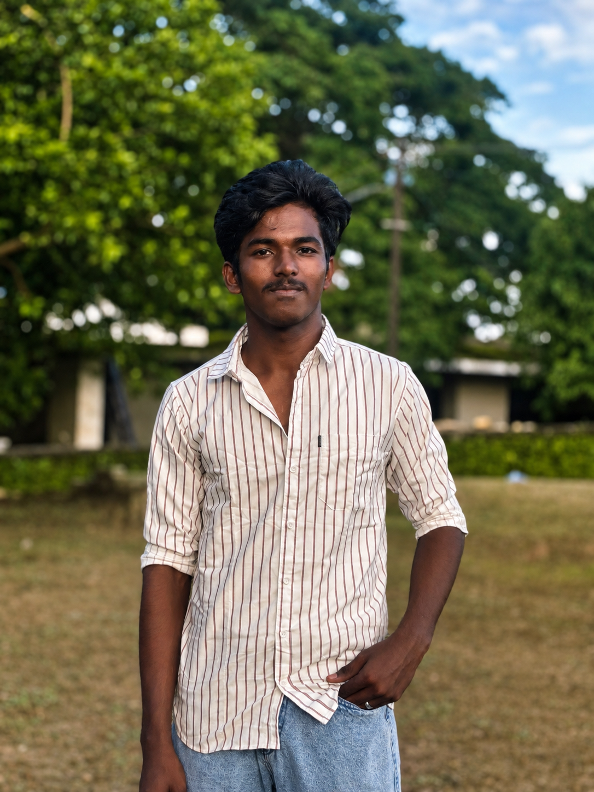

Building systems
from prompt to silicon.
Curious and experimental student developer from Tamil Nadu. Combining Local LLMs, FastAPI Python backends, and ESP32 physical hardware into functioning prototypes.
Personal Dossier
01 / BACKGROUND
Ezhil
Curious, experimental, and driven by logical problem-solving.
I am a student from Tamil Nadu, India, currently in Class 11 (CBSE CS-Maths stream) at Chettinadu Public School. My core academic interests span Mathematics, Physics, Chemistry, and Computer Science. I am particularly drawn to Mathematics and Physics mechanics because I love logical thinking and figuring out exactly how concepts work beneath the surface.
Alongside my regular academics, I am deeply focused on JEE-oriented studies. I prefer learning concepts from the ground up and applying them immediately through practical problem-solving.
I consider myself a curious and ambitious learner who learns by doing. Whether tackling a complex mathematical theorem or building local AI and hardware systems, I prefer working step-by-step and pushing beyond the required syllabus. Class 11 is a steep climb, but I view it as a necessary challenge to refine my discipline and experimental capabilities.
Current Trajectory & Focus
Balancing rigorous academic preparation with active engineering projects. Here is what I am focusing on right now:
Technical Arsenal & Disciplines
02 / CORE STACKBackend Architecture
Writing high-performance, asynchronous Python pipelines to manage API endpoints and hardware serial bridges.
Local AI Inference
Deploying and orchestrating quantized LLMs directly on hardware to create autonomous agent workflows.
Embedded Systems
Bridging software and silicon via microcontroller programming, managing UART, and rendering to TFT screens.
Frontend Interfaces
Building responsive, cinematic user interfaces. Translating AI outputs into dynamic web components.
Mathematics & Physics
Rigorous foundation in JEE-level mechanics, kinematics, and logical problem solving, directly applied to programming.
Aerospace Ambition
Targeting a future merging software engineering with commercial aviation and avionics systems.
Interactive Interface
03 / ASK EZHILModel: Ezhil_Profile_v3.0 (Local/Quantized)
Status: Ready for queries.
Flagship Innovation
04 / LIVE SYSTEMVOV AI
An offline autonomous AI assistant & web app generator. It executes LLMs locally and syncs logic across microcontrollers and live user interfaces seamlessly.
Ollama + Qwen
Zero cloud API costs. Full privacy with locally hosted quantized weights.
FastAPI Engine
Asynchronous Python routing, prompt pipelines, and multi-threaded logic.
Realtime UI
Dynamic app generation and user command feeds directly on the browser.
ESP32 / TFT
Serial bus bridge rendering generated states directly on physical screens.